A look at SchellingBoard's screens, from proposing a session to seeing it on the schedule. Click any screenshot to zoom in.
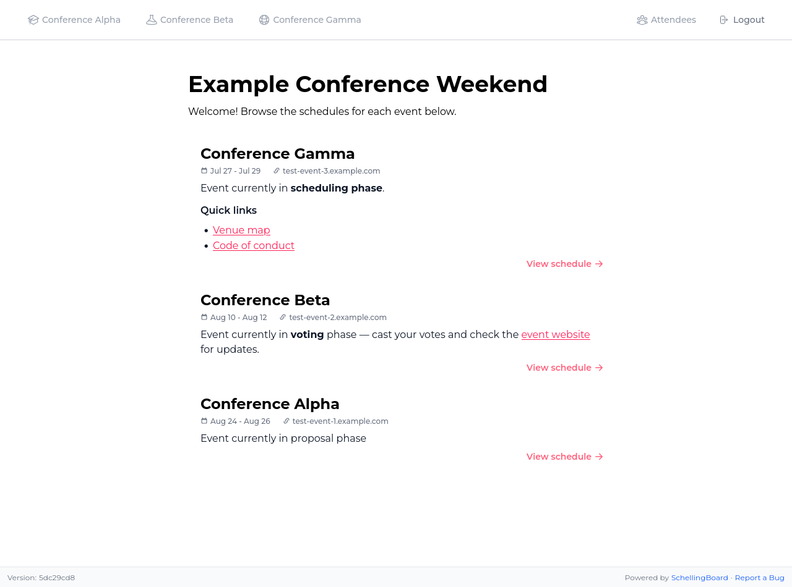
1. Manage multiple eventsEvery event gets its own page with phase, dates, and quick links, all listed from one home page.
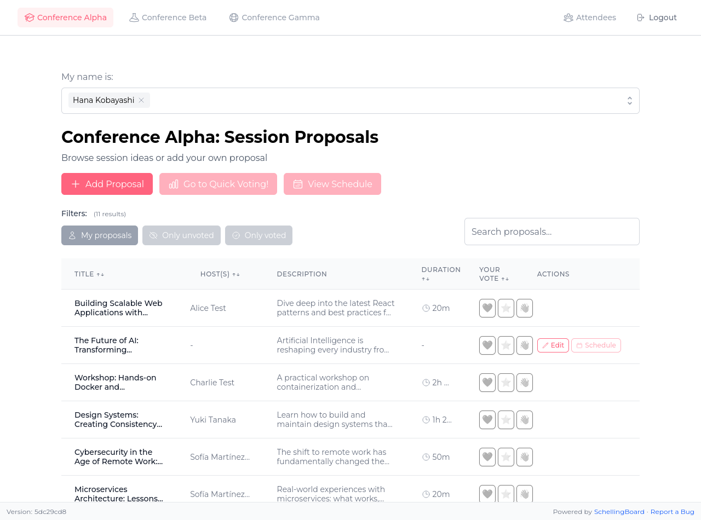
2. Browse proposalsSearch, filter, and sort session proposals right from the list.
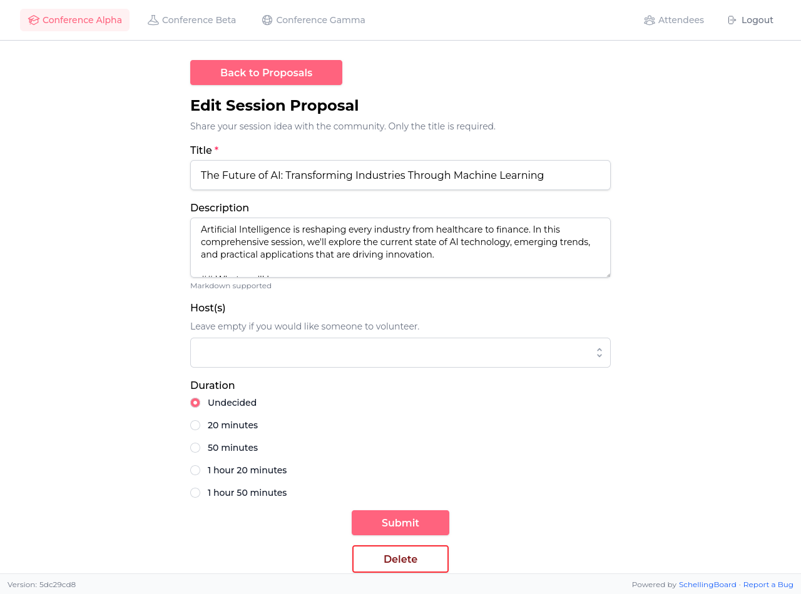
3. Propose a sessionAttendees submit an idea in seconds — only a title is required.
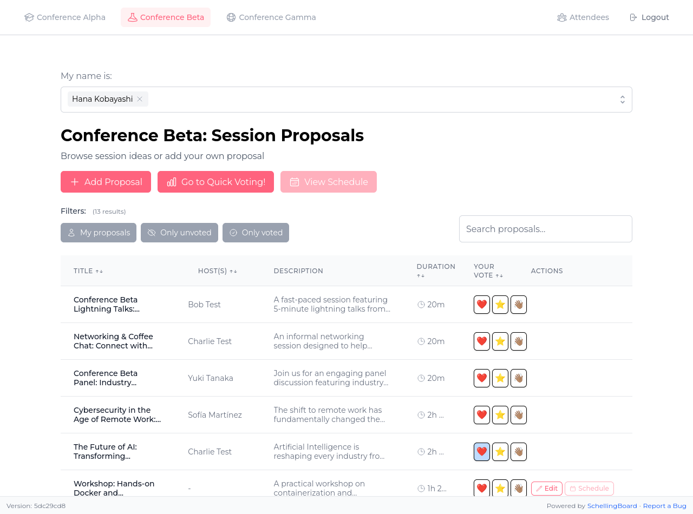
4. Vote at a glanceCast Interested / Maybe / Skip votes right from the list and see your choices highlighted.
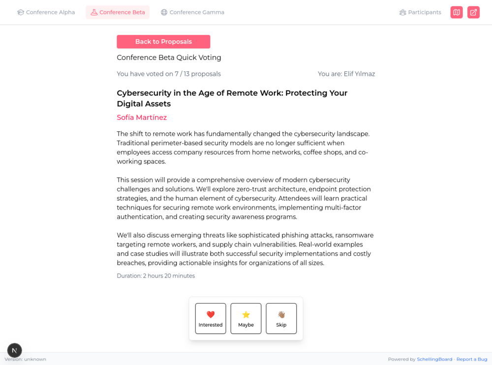
5. Quick Voting modeGo through every proposal one at a time to vote quickly on all of them.6. Build the scheduleHosts drag proposals onto a time-and-room grid, with room photos, capacity, and location shown inline.
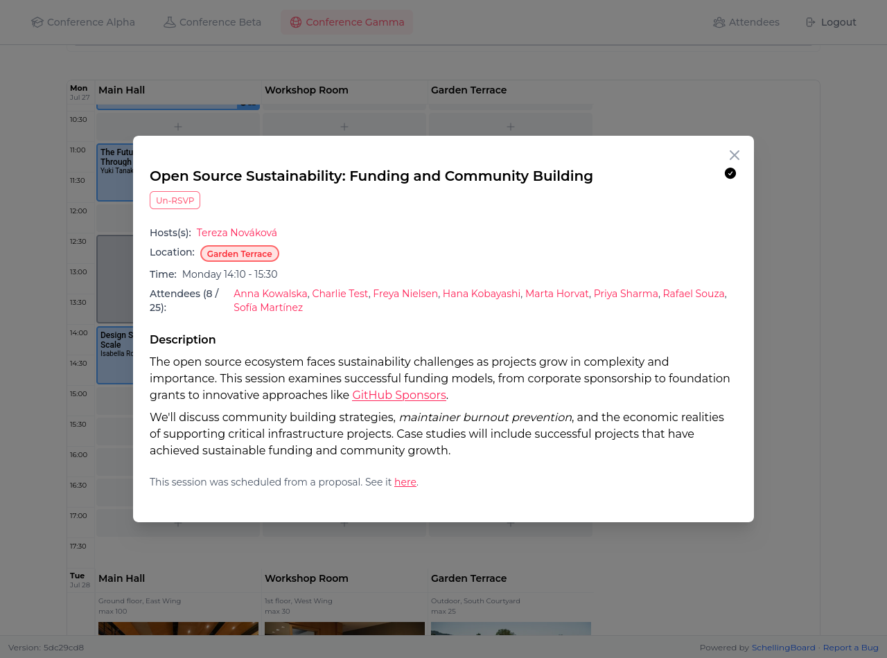
7. Session details, at a glanceClick any scheduled session for hosts, attendees, timing, and the full description.
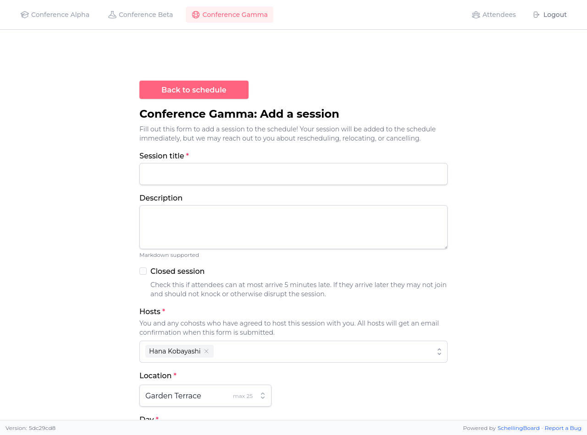
8. Add sessions directlyHosts can skip the proposal queue and add a session straight to the schedule, including closed-session and capacity settings.
Attendees & profiles
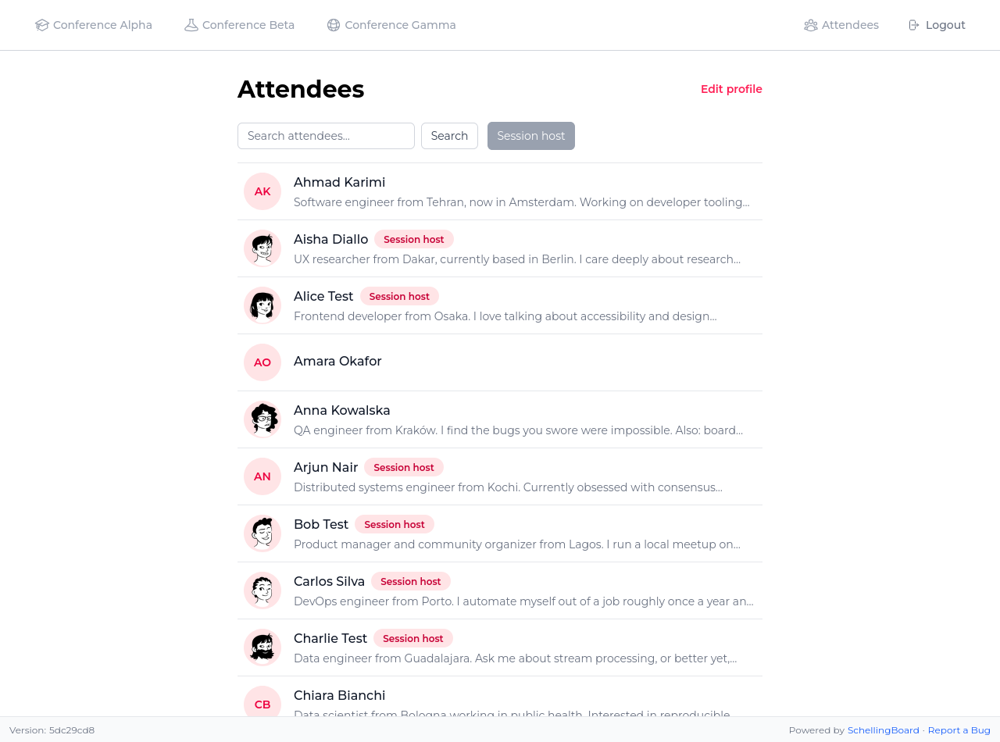
9. Attendee directorySearch everyone at the event and see who's hosting a session at a glance.
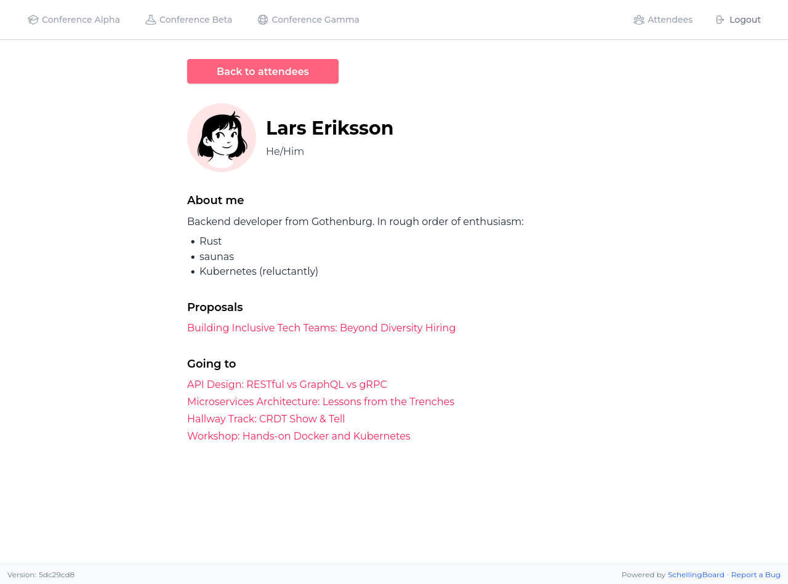
10. Participant profilesEveryone gets a profile with their bio, proposals, and the sessions they're attending.
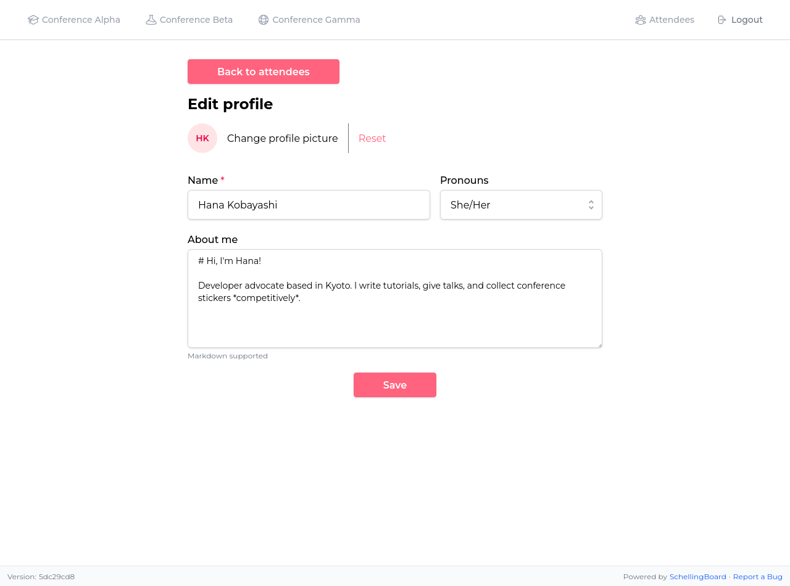
11. Edit your profileSet your name, pronouns, avatar, and a Markdown bio.
On mobile
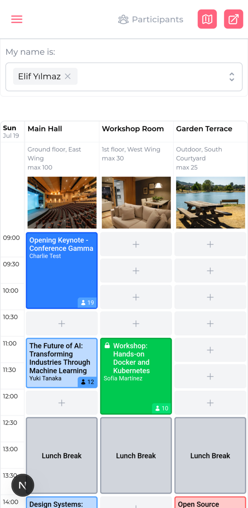
12. Works great on mobileThe full schedule is usable on a phone, so attendees can check it on the go.
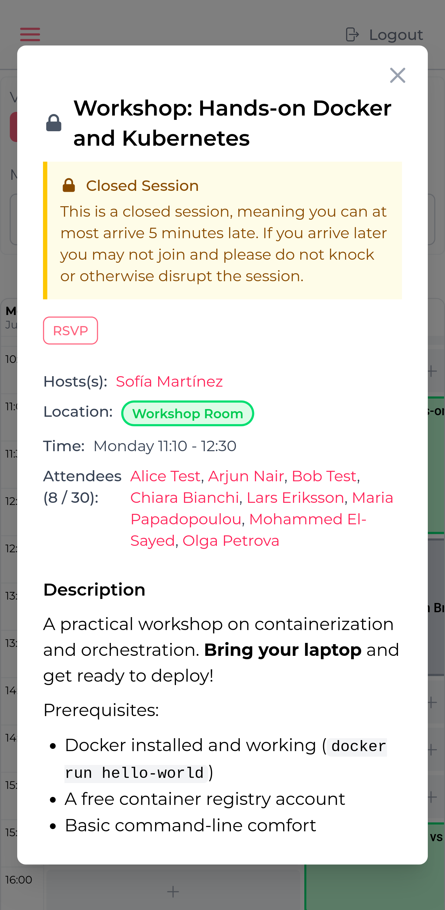
13. Closed-session noticesAttendees are warned about late-arrival rules before they RSVP.
Admin
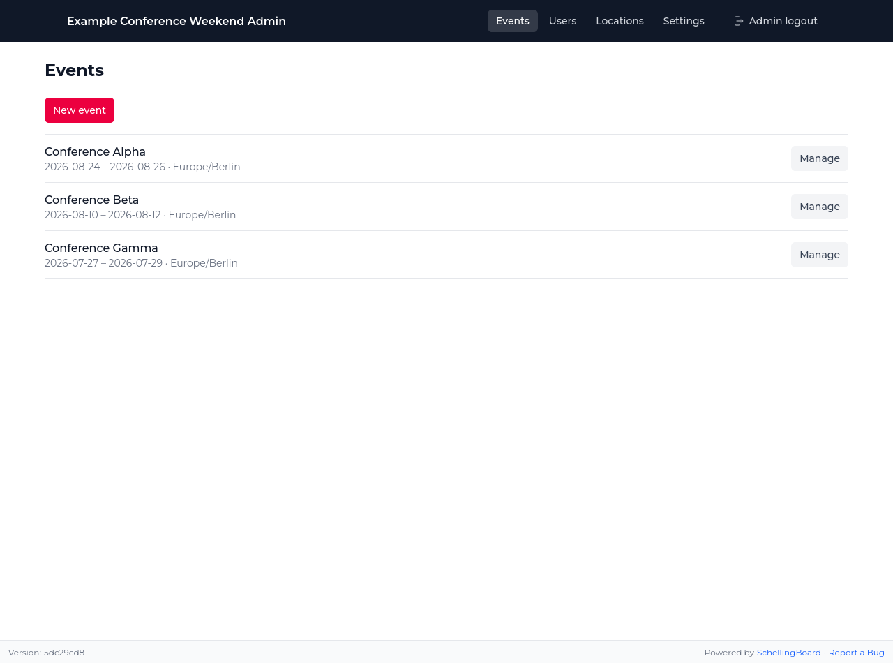
14. Admin: manage all your eventsSee every event's dates and jump straight into managing one.
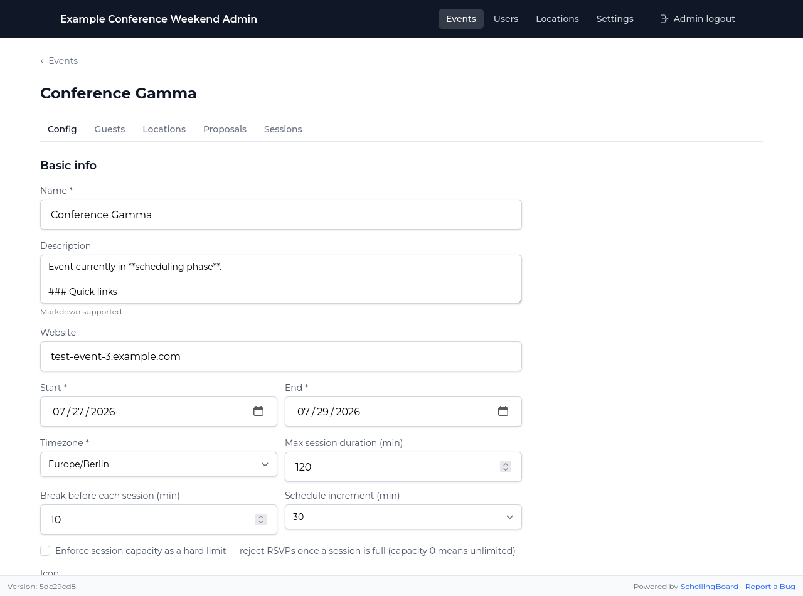
15. Admin: configure each eventSet the name, description, dates, timezone, and scheduling rules per event.